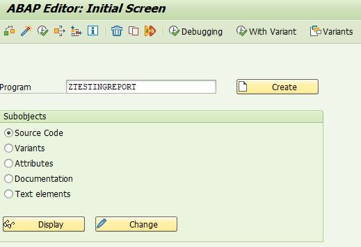

Navigate to ABAP Editor: Initial Screen by entering SE38 in the command field.
Enter the new Program Name (for the report) in the program text box

Koder are advised to perfrom a check to ensure that the name has not been used by hitting the display button after koder has entered the program name.
A message at the bottom left of the window shall write "Program ZTESTINGREPORT does not exist" which means that the program name is safe to use(create). *If koder has a different program name, the message shall display as "Program [koder program name appear here] does not exist".
If koder's program name already exist, it shall direct to another page, displaying the program's existing code.
Now, proceed to press on the create button. A pop-up window shall appear for setting up the program's attributes.
In the pop up window, koder will find the following fields;
Title: [Report Title - Program Header displayed in the title line when koder execute the program. If koder do not specify any header, the program name appears in the title line]
Under Attributes
Type : [this specifies the type of program]
Possible Program Types are:
1 - Executable program
I - INCLUDE Program
M - Module Pool
F - Function group
S - Subroutine Pool
J - Interface pool
K - Class pool
T - Type Pool
X - Transformation (XSLT or ST Program)
Q - Database Procedure Proxy
*----------------------------------------------------------------------*
* Table Definition
*----------------------------------------------------------------------*
*----------------------------------------------------------------------*
* Types Definition
*----------------------------------------------------------------------*
*----------------------------------------------------------------------*
* DATA Declarations
*----------------------------------------------------------------------*
*----------------------------------------------------------------------*
* Internal Table Declarations
*----------------------------------------------------------------------*
*----------------------------------------------------------------------*
* Work Area Declarations
*----------------------------------------------------------------------*
*----------------------------------------------------------------------*
* Constants
*----------------------------------------------------------------------*
*----------------------------------------------------------------------*
* INITIALIZATION
*----------------------------------------------------------------------*
INITIALIZATION.
*----------------------------------------------------------------------*
* SELECTION SCREEN
*----------------------------------------------------------------------*
*----------------------------------------------------------------------*
* AT SELECTION-SCREEN
*----------------------------------------------------------------------*
AT SELECTION-SCREEN.
*----------------------------------------------------------------------*
* AT SELECTION-SCREEN OUTPUT
*----------------------------------------------------------------------*
AT SELECTION-SCREEN OUTPUT.
*----------------------------------------------------------------------*
* START-OF-SELECTION
*----------------------------------------------------------------------*
START-OF-SELECTION.